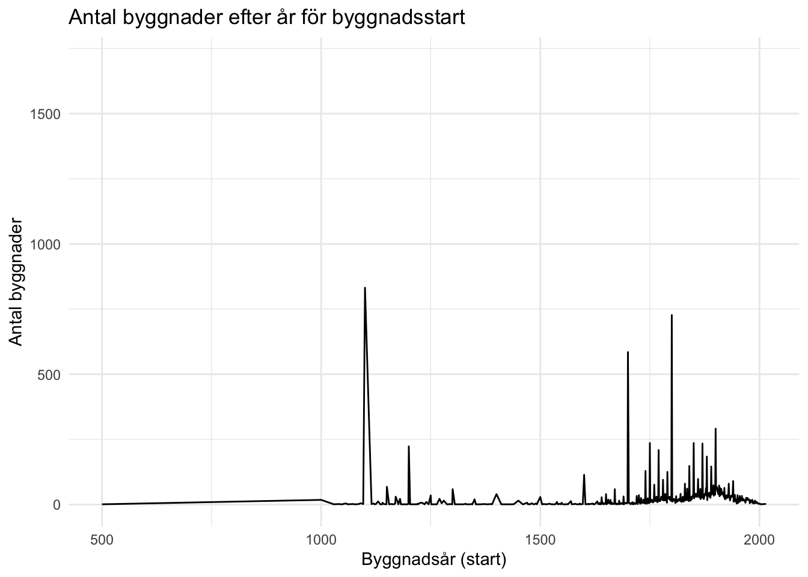

library(sf) ## Geografisk analys
library(tidyverse) ## Databearbetning och visualisering
library(DT) ## Enkla tabeller i html
library(rvest) ## För att "skrapa" ner data från hemsidorI min roll som Data Science-konsult har jag jobbat mycket med utbildning. Jag har hållt allt från introduktionskurser till fördjupningar i specifik metodik och programmering. Som en del i att utveckla sådana kurser är jag alltid på jakt efter nya dataset. I Sverige finns det en uppsjö av olika öppen data. Historiskt har vi väl kanske inte varit så bra på att dela data, även om exempelvis ett initiativet Sveriges Dataportal, som den nya digitaliseringsmyndigheten DIGG ligger bakom, har försökt förbättra det.
I vilket fall, jag gillar kartor och äldre byggnader så jag blev glad när jag snubblade över ett dataset som Länsstyrelsen har, som är ett geopaket över Sveriges Byggnader, Byggnadsminnen och kyrkor. Vad jag kunde se finns det inte än på dataportalen.
I det här inlägget visar jag hur du kan läsa in geopaketet i R och analysera data för att svara på frågan: Vilken är Sveriges äldsta byggnad?
Paket vi använder
Vi kan börja med att ladda ner och unzippa filen programmatiskt.
download.file("https://gis-services.metria.se/raafeed/files/gpc/BU.BuildingsGPKG.zip",
destfile = "buildingsGPKG.zip")
unzip("BuildingsGPKG.zip", files = "BU.Buildings.gpkg")Med st_read() kan vi läsa in geopaketet.
buildings <- st_read("BU.Buildings.gpkg") |>
st_transform("+proj=longlat +datum=WGS84") # leaflet vill ha WGS84Reading layer `BU_Buildings' from data source
`/Users/filip.wastberg/Work/filipwastberg/posts/2023-10-25-old-buildings/BU.Buildings.gpkg'
using driver `GPKG'
Simple feature collection with 13990 features and 5 fields
Geometry type: POINT
Dimension: XY
Bounding box: xmin: 270005 ymin: 6134557 xmax: 916001 ymax: 7610739
Projected CRS: SWEREF99 TMglimpse(buildings)Rows: 13,990
Columns: 6
$ inspireid <chr> "afec8f53-635b-4b41-8cd2-72408054ecd3", "…
$ sitename <chr> "SJÄLANDERSKA SKOLAN", " REHNSTEDTS, MANG…
$ url <chr> "https://bebyggelseregistret.raa.se/bbr2/…
$ buildingnaturevalue <chr> NA, NA, NA, NA, NA, NA, NA, NA, NA, NA, N…
$ conditionofconstructionvalue <chr> NA, NA, NA, NA, NA, NA, NA, NA, NA, NA, N…
$ geom <POINT [°]> POINT (17.14351 60.67645), POINT (1…Vi ser att vi fått ner en fil med nästan 14 000 rader (byggnader). Där finns namn på byggnaden och en URL till bebyggelseregistret. Till sist har vi också vår geom som kan användas för att visualisera data. Vi kan skapa en första enkel karta över de sex första byggnaderna.
library(leaflet)
buildings |>
head() |>
leaflet() |>
addTiles() |>
addMarkers(popup = ~sitename)Men om vi går in på bebyggelseregistret så ser vi att det finns massa mer information om byggnaderna. Exempelvis när de är byggda, vilken kommun de ligger i och så vidare. Data är också någorlunda strukturerad vilket gör att vi programmatiskt kan läsa data genom “scraping”. I R gör vi det med paketet rvest
Nedan har jag skapat en funktion som tar en URL till bebyggelseregistret, laddar ner data och sparat det som en data.frame.
get_building_data <- function(url){
resp <- read_html(url)
url_id <- str_extract(url, "[:digit:]+$")
## Eftersom data finns i en html tabell använder vi bara html_table()
table <- resp |>
html_table()
## Vissa tabeller är tomma, dessa fyller vi med NA
if(length(table) < 2){
df <- tibble::tibble(
names = c("Namn",
"Nybyggnadsår",
"Län",
"Kommun",
"Landskap",
"Socken",
"Församling",
"Stift",
"Adress",
"Historisk kategori",
"Nuvarande kategori"),
values = NA,
id = url_id
)
} else {
df <- table[[2]]
df$id <- url_id
colnames(df) <- c("names", "values", "id")
}
df |>
tidyr::pivot_wider(
names_from = names, values_from = values
) |>
janitor::clean_names()
}Om vi testar funktionen på den första byggnaden i datasettet får vi ut det här:
get_building_data("https://bebyggelseregistret.raa.se/bbr2/byggnad/visaBeskrivning.raa?page=beskrivning&visaBeskrivningar=true&byggnadId=21000000969300") |>
glimpse()Rows: 1
Columns: 12
$ id <chr> "21000000969300"
$ namn <chr> "SJÄLANDERSKA SKOLAN (akt.)"
$ nybyggnadsar <chr> "1877 - 1877"
$ lan <chr> "Gävleborg"
$ kommun <chr> "Gävle"
$ landskap <chr> "Gästrikland"
$ socken <chr> "Gävle"
$ forsamling <chr> "Gävle församling"
$ stift <chr> "Uppsala stift"
$ adress <chr> "Ruddammsgatan 32, Norra Rådmansgatan 14"
$ historisk_kategori <chr> "Utbildning och vetenskap - Skolbyggnad"
$ nuvarande_kategori <chr> ""Nu vill vi bara göra det för alla andra byggnader. Det gör vi enkelt med en funktion i R som heter map_df(). Kort sagt skapar vi en lista med alla våra URL och “mappar” eller itererar vår funktion över varje URL för att få fram vår slutgiltiga data.frame .
urls <- pull(buildings, url)
building_data <- map_df(urls, get_building_data)Vi kan nu slå samman vår data från geopaketet med den skrapade datan:
buildings_complete <- bind_cols(
buildings,
building_data
)Utöver det finns det massa mer jag vill göra för att städa datan. Men för att inte göra det här inlägget för långt eller för tråkigt har jag lagt upp all kod här.
I slutändan får vi en csv-fil som ser ut så här:
buildings <- read_csv("buildings_complete.csv")Rows: 13990 Columns: 23
── Column specification ────────────────────────────────────────────────────────
Delimiter: ","
chr (17): inspireid, sitename, url, buildingnaturevalue, namn, nybyggnadsar,...
dbl (5): id, byggnadsar_start, byggnadsar_klart, lng, lat
lgl (1): conditionofconstructionvalue
ℹ Use `spec()` to retrieve the full column specification for this data.
ℹ Specify the column types or set `show_col_types = FALSE` to quiet this message.glimpse(buildings)Rows: 13,990
Columns: 23
$ inspireid <chr> "afec8f53-635b-4b41-8cd2-72408054ecd3", "…
$ sitename <chr> "Själanderska Skolan", "Rehnstedts, Mangå…
$ url <chr> "https://bebyggelseregistret.raa.se/bbr2/…
$ buildingnaturevalue <chr> NA, NA, NA, NA, NA, NA, NA, NA, NA, NA, N…
$ conditionofconstructionvalue <lgl> NA, NA, NA, NA, NA, NA, NA, NA, NA, NA, N…
$ id <dbl> 2.100e+13, 2.100e+13, 2.100e+13, 2.100e+1…
$ namn <chr> "Själanderska Skolan (Akt.)", "Rehnstedts…
$ nybyggnadsar <chr> "1877 - 1877", "1750 - 1800", "1764 - 176…
$ lan <chr> "Gävleborg", "Gävleborg", "Gävleborg", "G…
$ kommun <chr> "Gävle", "Bollnäs", "Bollnäs", "Bollnäs",…
$ landskap <chr> "Gästrikland", "Hälsingland", "Hälsinglan…
$ socken <chr> "Gävle", "Bollnäs", "Bollnäs", "Bollnäs",…
$ forsamling <chr> "Gävle församling", "Bollnäs församling",…
$ stift <chr> "Uppsala stift", "Uppsala stift", "Uppsal…
$ adress <chr> "Ruddammsgatan 32, Norra Rådmansgatan 14"…
$ historisk_kategori <chr> "Utbildning och vetenskap - Skolbyggnad",…
$ nuvarande_kategori <chr> NA, NA, NA, NA, NA, "Jordbruk - Kvarn - V…
$ ungefarlig_adress <chr> NA, NA, NA, NA, NA, NA, NA, NA, NA, NA, "…
$ byggnadsar_start <dbl> 1877, 1750, 1764, 1805, 1810, 1875, 1867,…
$ byggnadsar_klart <dbl> 1877, 1800, 1764, 1805, 1820, 1881, 1867,…
$ lng <dbl> 17.14351, 16.44579, 16.42535, 16.42580, 1…
$ lat <dbl> 60.67645, 61.35390, 61.35489, 61.35499, 6…
$ historisk_kategori_smal <chr> "Utbildning", "Jordbruk", "Slott", "Slott…Vi kan exempelvis visualisera år för byggnadsstart.
buildings_start <- buildings |>
group_by(byggnadsar_start) |>
count(sort = TRUE)
buildings_start |>
ggplot(aes(byggnadsar_start, n)) +
geom_line() +
theme_minimal() +
labs(
title = "Antal byggnader efter år för byggnadsstart",
x = "Byggnadsår (start)",
y = "Antal byggnader"
)Warning: Removed 1 row containing missing values (`geom_line()`).
Vi ser att vi har flera byggnader som har byggnadsstart år 1100. Gissningsvis är det här grova uppskattningar snarare än konkreta datum. Vi ser också att vi har en byggnad som har byggnadsstart år 500. Det låter lite märkligt. Vilken byggnad är det?
buildings |>
filter(byggnadsar_start == 500) |>
glimpse()Rows: 1
Columns: 23
$ inspireid <chr> "ca548ed7-c5a5-4b41-8f27-5add660f0764"
$ sitename <chr> "Domtrapphuset"
$ url <chr> "https://bebyggelseregistret.raa.se/bbr2/…
$ buildingnaturevalue <chr> NA
$ conditionofconstructionvalue <lgl> NA
$ id <dbl> 2.14e+13
$ namn <chr> "Domtrapphuset (Akt.)"
$ nybyggnadsar <chr> "0500 - 1500"
$ lan <chr> "Uppsala"
$ kommun <chr> "Uppsala"
$ landskap <chr> "Uppland"
$ socken <chr> "Uppsala"
$ forsamling <chr> "Uppsala domkyrkoförsamling"
$ stift <chr> "Uppsala stift"
$ adress <chr> NA
$ historisk_kategori <chr> "Bostadsbebyggelse - Bostadshus\t\t\n\t\t…
$ nuvarande_kategori <chr> NA
$ ungefarlig_adress <chr> NA
$ byggnadsar_start <dbl> 500
$ byggnadsar_klart <dbl> 1500
$ lng <dbl> 17.6351
$ lat <dbl> 59.85828
$ historisk_kategori_smal <chr> "Bostadsbebyggelse"Domtrapphuset i Uppsala uppges alltså ha en byggnadstid från 500 - 1500 vilket verkar lite brett. Om vi filtrerar ut de byggnader som har en lite mer specifik årsbestämning, hur ser det ut då?
buildings |>
filter(byggnadsar_klart - byggnadsar_start < 50) |>
arrange(byggnadsar_start) |>
select(sitename, nybyggnadsar, lan) |>
head() |>
datatable()Vi får ut ett antal byggnader i Östergötland som alla har byggnadsstart år 1000. De flesta av dem har dock flera byggnadsår, vilket kan vara en indikation på osäkerhet. Antagligen kan det också vara så att det hittats fornlämningar vid kyrkorna som är runt 1000-talet. Vilket inte är orimligt då den här delen av Sverige var tidigt ute när Sverige blev kristet. Men fornlämning och byggnadsstart är rimligtvis inte samma sak.
buildings |>
filter(byggnadsar_klart - byggnadsar_start < 50 & byggnadsar_start == 1000) |>
leaflet() |>
addTiles() |>
addMarkers(
lng = ~lng, lat = ~lat,
popup = ~paste0(sitename, "<br>", "Byggnadsår, start: ", byggnadsar_start)
)En byggnad som ofta brukar sägas vara den äldsta i Sverige är Dalby Kyrka i Skåne.
buildings |>
filter(str_detect(sitename, "Dalby Kyrka") & lan == "Skåne") |>
leaflet() |>
addTiles() |>
addMarkers(
lng = ~lng, lat = ~lat,
popup = ~paste0(sitename, "<br>", "Byggnadsår, start: ", byggnadsar_start)
) Men vad betyder det? Som du frågar får du svar, lärde vi oss på universitetet. Vad menar vi med Sveriges äldsta byggnad?
Eller som Stephan Borgehammar uttrycker det i Borgehammar, S. (2017) om Dalby Kyrkas datering.
Är dateringen till år 1060 korrekt? Vad syftar den på – kyrkans grundläggning eller dess invigning? Vilka konkurrenter har Dalby kyrka om titeln och vad vet vi om dem? Och vad menar vi med bevarad? Är en tillräckligt stor del av den ursprungliga kyrkan i Dalby bevarad och är den tillräckligt väl bevarad?
De äldsta spåren av trä i Dalby kyrka har med Kol-14-metoden daterades till mellan 1020 och 1160, ett väldigt brett spann.
Så, för att svara på vilken som är Sveriges äldsta byggnad med hjälp av data behöver vi… bättre data. Till dess får vi kanske gå på lokalhistorikern och läraren Georg Welins uppskattning om att Dalby Kyrka är byggd år 1060, vilket sannolikt gör den till Sveriges äldsta byggnad.